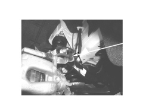

4420OA CHECK ON STATE OF CLIPS ON LAYOUT BRACKETS
- Path
- Test > 44 SUSPENSION AND WHEELS > 4420 REAR SUSPENSION > 4420O REAR SUSPENSION TESTS > 4420OA CHECK ON STATE OF CLIPS ON LAYOUT BRACKETS
- Kind
- test / check procedure
- Applies to
- all engines; all production periods
- Interactive page
- https://sloeber94.github.io/elrnDB-aBrrSpdr/en/#/946001051
Applies to: all engines; all production periods
- Check the state of the clips on the layout brackets
- Position the vehicle on a two column lift and raise it.
Check that there are no layout brackets without clips that flexible brake pipes pass through (see diagram).
If the clips are present, check that they are in good condition and that the rubber mountings are not damaged and do not have torn edges (see diagram).
